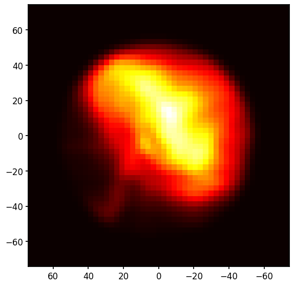

Preparing an extended source for LeakageLib fitting¶
The steps to process extended source data before fitting are the same as for point sources, with the extra step of extracting spatial weights. This should be done with the leakagelib_cxo script, which generates spatial weights from a Chandra image. Note that leakagelib_cxo is NOT a replica of IXPEobssim; IXPEobssim incorporates IXPE’s PSF and generates a simulated event file. leakagelib_cxo does not (and should not).
This extended source section analyzes Crab OBS ID 02006001. Please download the data from Heasarc. (We will skip particle weights, so you do not need to download the level 1 data). After unzipping the files, the next step is to run leakagelib_cxo. Run the help script to see what the script requires.
[1]:
!python -m leakagelib_cxo -h
>>> PyXSPEC is not installed, you will no be able to use it.
usage: clean [-h] --cxo-evt CXO_EVT [CXO_EVT ...] --cxo-arf CXO_ARF
[CXO_ARF ...] --ixpe-evt IXPE_EVT --ixpe-arf IXPE_ARF
[--expmap EXPMAP] --output OUTPUT [--width WIDTH] [--elow ELOW]
[--ehigh EHIGH] [--centerx CENTERX] [--centery CENTERY]
[--reg-src REG_SRC] [--reg-bkg REG_BKG]
[--clobber | --no-clobber]
Creates a CXO image, adjusted to the IXPE band. Before running this command,
you should use the ciao tools merge_obs and mkwarf to create a merged image
(including an exposure map) and an arf for each observaton. These are required
as inputs for this script.
options:
-h, --help show this help message and exit
--cxo-evt CXO_EVT [CXO_EVT ...]
List of Chandra event files to use
--cxo-arf CXO_ARF [CXO_ARF ...]
List of Chandra ARFs to use
--ixpe-evt IXPE_EVT IXPE event file (only one is necessary. Try DU1)
--ixpe-arf IXPE_ARF IXPE ARF (only one is necessary, for simplicity. Try
DU1)
--expmap EXPMAP Chandra merged observation ARF (Optional)
--output OUTPUT Name of the output file
--width WIDTH Width of the image, in arcseconds. Default: as big as
the CXO image (Optional)
--elow ELOW Low end of the energy range (keV). (Default: 2)
--ehigh EHIGH High end of the energy range (keV). (Default: 8)
--centerx CENTERX IXPE pixel on which the fit will be centered in the x
direction. (Default: 300)
--centery CENTERY IXPE pixel on which the fit will be centered in the y
direction. (Default: 300)
--reg-src REG_SRC Source region. Should be saved in CIAO format in fk5
coordinates (Optional)
--reg-bkg REG_BKG Background region. Should be saved in CIAO format in
fk5 coordinates (Optional)
--clobber, --no-clobber
Overwrite files
As you see, it requires
CXO event file(s) to create the Source object from
IXPE ARF and CXO ARF(s) to find the expected fluxes, taking the different effective areas into account. Provide multiple ARFs if providing multiple CXO event files
IXPE event file to orient the CXO image relative to the IXPE pointing.
IXPE energy range used for fitting (2-8 keV by default)
IXPE pixel used for centering (300,300 by default)
and optionally
The width of the output spatial weight image
A CXO source region to extract an image for
A CXO background region to estimate background flux
CXO Exposure map to exposure correct the event file
ciao provides tutorials on how to extract ARFs and exposure maps for Chandra data, so we do not cover that here. If you are using more than one event file, I suggest using the full exposure map generated by the ciao tool merge_obs.
To make this example, I downloaded a short Crab observation from the Chandra archive (obsid 13146) and placed inside a src.reg region file containing
circle(5:34:31.8424,+22:00:52.502,0.5')
(This region was made in DS9 and saved with the ciao format with fk5 coordinates)
I then ran the following script
chandra_repro . repro
asphist "repro/pcadf13146_000N001_asol1.fits" asp.hist evtfile="repro/acisf13146_repro_evt2.fits[sky=region(src.reg)]" clobber=yes
sky2tdet "repro/acisf13146_repro_evt2.fits[sky=region(src.reg)]" asp.hist tdet[wmap] clobber=yes
mkwarf tdet arf.arf weightfile=none feffile=none spectrum=none egrid=0.3:10:0.1 pbkfile=none clobber=yes
I also downloaded the IXPE data for the Crab from OBSID 02006001 and ran this script to generate an IXPE ARF:
ixpecalcarf evtfile="event_l2/ixpe02006001_det1_evt2_v01.fits" attfile="hk/ixpe02006001_det1_att_v01.fits" arfout="arf.arf" specfile=None clobber=yes
Then the following code will create a source image. To keep things simple I did not apply background subtraction or exposure correction.
[2]:
!python -m leakagelib_cxo\
--output "data/13146/crab.fits"\
--cxo-evt "data/13146/repro/acisf13146_repro_evt2.fits"\
--cxo-arf "data/13146/arf.arf"\
--ixpe-evt "data/02006001/event_l2/ixpe02006001_det1_evt2_v01.fits"\
--ixpe-arf "data/02006001/arf.arf"\
--reg-src "data/13146/src.reg"\
--width 150\
--clobber
>>> PyXSPEC is not installed, you will no be able to use it.
Exposure map corrections will not be made because you did not pass an exposure map
You did not provide a background region. The Chandra image will not be background subtracted
Image saved to data/13146/crab.fits. To use it, load the source with LeakageLib using the following code:
import leakagelib
source = leakagelib.Source.load_file("data/13146/crab.fits")
This gives a leakagelib.Source object, which you can use as a source in your LeakageLib fit.
Usage Notes
This example doesn’t subtract background because Crab is so bright, but most analyses should use the reg-bkg argument. Otherwise LeakageLib will include the CXO background as part of the source flux and try to fit for its polarization, which is incorrect.
Since all LeakageLib fit sources need to be the same size, your “width” argument should be large enough to contain the entire data set, not just this one component.
In order to make sure all sizes have the same width and center, make sure the width, centerx, and centery arguments are the same for all sources.
If you later find that the spatial weight image is misaligned with the data, change centerx and centery to shift the weight image.
A source object for LeakageLib is then loaded simply using
[3]:
import leakagelib
import numpy as np
import matplotlib.pyplot as plt
source = leakagelib.Source.load_file("data/13146/crab.fits")
>>> PyXSPEC is not installed, you will no be able to use it.
Displaying it,
[4]:
fig, ax = plt.subplots()
ax.pcolormesh(source.pixel_centers, source.pixel_centers, np.flip(source.source, axis=1))
ax.set_aspect("equal")
ax.set_xlim(source.pixel_centers[-1], source.pixel_centers[0])
ax.set_ylim(source.pixel_centers[0], source.pixel_centers[-1]);

This image is sharper than the normal IXPE data because this is a model for where the source photons arrive from, not where IXPE detects them. LeakageLib can uses this model to separate sources which overlap.
The map doesn’t include the pulsar because of pileup, so it is a nebula-only spatial weight map (which is what we want to measure the nebula polarization). The pulsar’s readout streak is barely visible and should be removed in a more careful analysis.